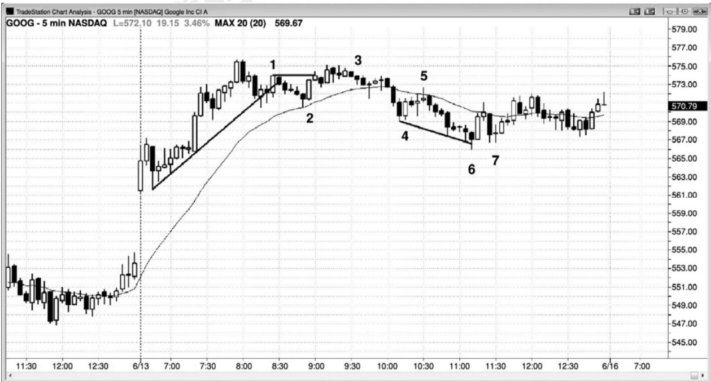
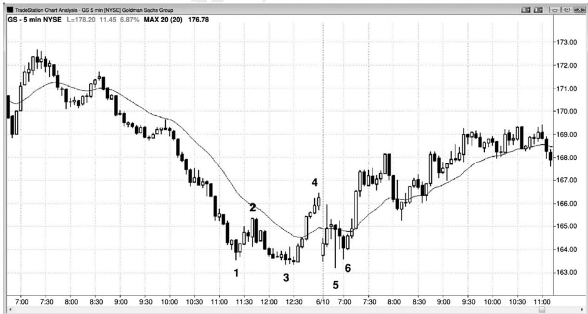
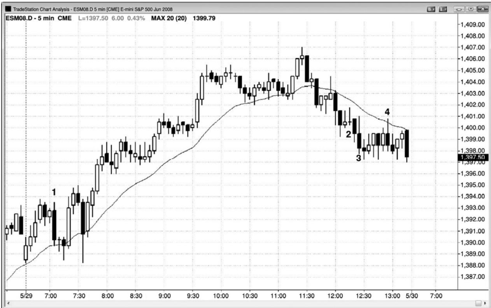
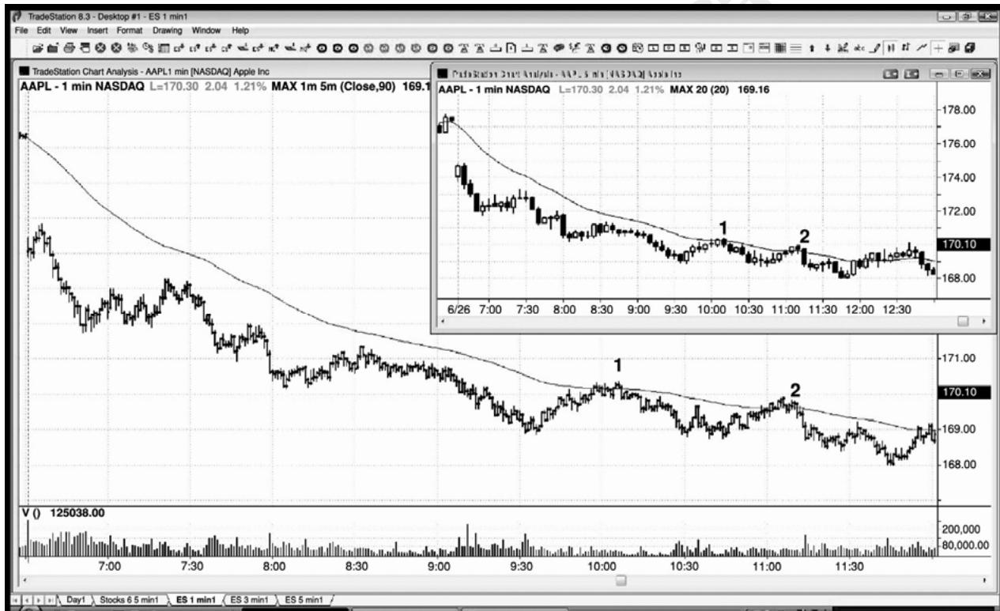
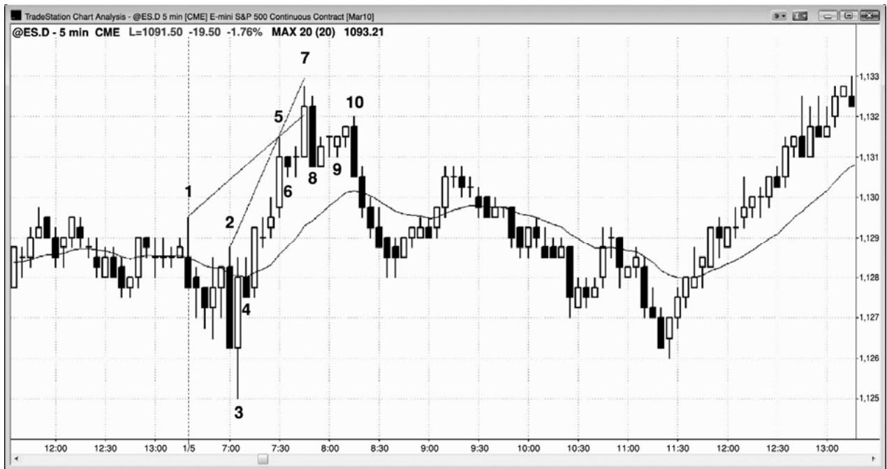
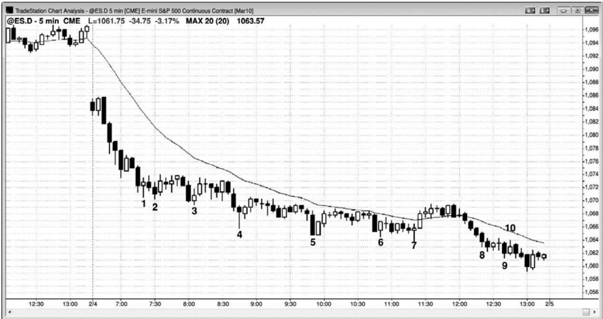

第26章 做一笔交易需要两个理由¶
第 26 章 做一笔交易需要两个理由
一些基本规则能够使交易容易一些，因为一旦规则被满足，你就可以毫不犹豫地下单。最重要的规则之一是你需要两个理由来做一笔交易，任意两个理由便足够好。一旦你拥有两个理由，就下单入场，一旦入场，就遵循基本的利润目标和保护性止损规则，相邻自己在一天结束后将会有所盈利。需要重点注意的一点是，如果有一轮陡峭的趋势，那么决不要做逆势交易，即便出现高点或低点 2 或 4，除非首先出现明显的趋势线突破或趋势通道过冲和反转。另外，如果趋势线突破拥有很强的动能，而不只是横向滑动，那么就要好得多。记住，棒线计数架构不是趋势反转形态。举例说明，高点 2 是多头趋势或交易区间底部的入场架构，不是空头趋势中的入场架构，因此，如果出现一轮陡峭的空头趋势，那么不应寻找高点 2、高点 3 或高点 4 买进架构。
学着预期交易，以便能够在有所准备的情况下下单。举例说明，如果市场跌破一个重要的波段低点，然后形成两条下跌腿，或者在趋势通道线过冲，寻找就寻找向上反转；如果一条过度的腿形中出现一个 ii 形态，那么就寻找反转。一旦你看到一条外包棒或一个带刺铁丝形态，那么就在极点处寻找小型棒，准备反向入场。如果出现一轮强趋势，那么就准备在向均线的第一次回撤交易，在向均线的任意两条腿回撤交易，准备在第一均线缺口回撤交易。
只有少数几种情况下，你只需一个理由就可入场。首先，无论什么时候出现一轮强趋势，你必须在不是高潮或最终旗形反转之后形成的每个回撤入场，即便回撤只是强多头尖峰中的一个高点 1 或强空头尖峰中的一个低点 1。另外，如果出现趋势线过冲和不错的反转棒，那么你就可以做反向交易，预期趋势恢复。其他只需一个理由就可入场的时间是，无论是在交易区间中，还是在趋势中，出现了二次入场信号。根据定义，有了一个首次入场，于是二次入场是第二个理由。
以下是一些可能的入场理由（记住，你需要两个或两个以上的理由）：
很好的信号棒形态，比如很好的反转棒、双棒反转或 ii 形态。
趋势中的均线回撤，特别是两条腿回撤（多头趋势中的高点2或空头趋势中的低点2）。
突破回撤。
明确的总在场内市场（强趋势）中的回撤。
对任意类型的支撑或阻力的测试，特别是对趋势线、趋势通道线、突破点和测量运动目标的测试。
决斗线。
多头趋势中或交易区间底部的高点 2 买进架构（无论你什么时候看到一个双重底，它都是一个高点 2 买进架构）。
空头趋势或交易区间顶部的低点2卖出架构（每个双重顶都是一个低点2卖出架构）。
大部分多头反转（底部）来自微型双重底、双重底或最终空头旗形的反转。
大部分空头反转（顶部）来自微型双重顶、双重顶或最终多头旗形的反转。
多头趋势中的横向至下跌高点 3 回撤，是一个楔形多头旗形。
空头趋势中的横向至上涨低点 3 回撤，是一个楔形空头旗形。
高点 4 多头旗形。
低点 4 空头旗形。
当你寻找做空架构时，交易区间顶部的弱高点 1 或高点 2 信号棒。
当你寻找做多架构时，交易区间底部的弱低点 1 或低点 2 信号棒。
任何形态的失败（市场在到达预期幅度前反转）：
对前一高点或低点的突破。
旗形突破（最终旗形在第三本书中讨论）。
趋势线或趋势通道线过冲后的反转。
未能到达利润目标，比如在电子迷你中刮头皮时，市场在 5 个或 9 个跳动处反转。

P252
如图26.1所示，棒2是一轮强劲的多头趋势中向均线的两条腿回撤（每个双重底都是一个高点2买进架构），有充分的理由做多。另一个理由是，开盘向上大幅跳空后形成的趋势中，它是20多棒以来首次触及均线。它还是第一次很好的趋势线突破，所以预期市场会测试高点。
棒 3 形成于第二次向上突破棒 1 的尝试失败之后。与拥有空头收盘的第二棒形成一个 ii架构。它也是正在形成的交易区间中的一个低点 2，在新的交易区间中，截止棒 1 的上涨是第一条上涨腿。
在一个强三棒空头尖峰之后，棒 5 是空头波段中均线处的一个低点 2。在强尖峰之后，市场很可能会形成一条空头通道。
棒 6 是对一条空头趋势通道线的过冲和反转，是对第一小时紧凑交易区间（一个三角形）的突破测试。然而，它位于持续 3 个小时的空头通道的底部，而通道可能走得非常远，并且在一路上包含很多回撤。在做逆势交易之前，等待通道出现突破回撤，几乎总是更好的选择。那个二次入场在更高低点棒 7 到来，它是在向上突破从棒 5 开始的下降趋势线（未画出）之后的一波回撤。
虽然棒 6 是一条反转棒，但是它的收盘略高于中点，所以是一条疲弱的信号棒。

如图26.2所示，昨天收盘前市场飙升至棒4，完成了一个正在形成的扩张三角形的四条腿，再需要 1 个新的低点，那个扩张三角形就完成了。如果你注意到那种可能性，你就可以在市场跌破棒 3 后寻找做多入场。棒 5 跌破了棒 3，完成了扩张三角形底，你只是必需等待一个入场架构，它比双棒反转和小幅更高低点棒 6 的高点高出 1 个跳动。
P253

如图 26.3 所示，棒 1 是测试昨日高点之后的一个二次入场做空架构。市场的上涨势头很猛，所以最好等待二次入场。交易者们可能会在该棒跌破前一棒低点，成为一条外包下跌棒时做空，或者他们可能会在 1 棒之前的那条空头棒的低点下方做空。总之，在强空头棒下方做空总是更加可靠。
棒 2 是一个大型内包十字星之后的一个高点 2，但是下行动能很强。当强空头尖峰之后形成紧凑的空头通道时，在买进前最好等待趋势线突破。类似地，棒 3 是一个糟糕的二次做多入场，因为它前面是一条强空头趋势棒，在准备买进之前，你仍然应该等待空头趋势线突破。
棒 4 是均线处的一个低点 2，但是它前面的 4 棒几乎完全重叠。在这样一段紧凑的交易区间内，你决不应该在任一方向入场，直至出现下列事件之后：一条大型趋势棒突破该形态，突破幅度至少为 3 个跳动，而且你已经等待那一棒失败；或者在交易区间的顶部或底部出现一条可以让你做反向交易的小型棒。这是一个双棒反转，至少与另一棒重叠，而且信号棒很大，迫使交易者们在交易区间的底部做空。正如在第一本书中的第 5 章关于反转棒的部分所讨论的，这很可能是一个做空陷阱，而不是一个顺势架构。老手们不会在那里做空，激进型的交易者们可能会在它的低点设定限价单买进。
很多类似棒 2 和棒 3 处的那些单跳动虚假突破，出现在一条逆势 5 分钟入场棒的头一两分钟。在那一棒最后一分钟产生的突破通常更为可靠，因为刚好在那一棒的终点市场表现出了动能。与那种动能出现在 4 分钟之前，然后市场又回撤相比，最后出现的动能延续到下一棒的可能性更大。
做低胜率交易带来的损失将超过你的所有收益。

P254
当一只股票处于强趋势中时，使用限价单在最初几次测试均线时入场是合理的，或者你可以使用1分钟图，在均线处利用价格行为止损入场。在图26.4中，5分钟图是较小的图，1 分钟图上的均线是 5 分钟均线，但是画在 1 分钟图上。在 AAPL 的棒 1 和棒 2 处，1 分钟图上 5 分钟均线的一个二次入场，大约有 25 美分的风险，5 分钟图（插图）上的价格行为入场大约有 45 美分的风险。你也可以在第一个 5 分钟收盘高于均线时在市价做空，使用大约 20美分的止损。这里，5 分钟图上的棒 1 和棒 2 处，市场仅超越收盘价 4 美分便向下反转。总之，较好的选择是要么等待第二个 1 分钟图入场，要么使用传统的 5 分钟价格行为入场（在测试指数均线的那一棒下方使用止损单入场），因为另外两种方法只有非常少的收益，它们只是包含更多的思考，那将令你从更高时间框架图表（比如5分钟）上的主要交易中分心。

如图 26.5 所示，棒 1、5 和 7 在电子迷你中形成一个楔形。由棒 2、5 和 7 形成的楔形是一个不大可靠的反转架构，因为通道非常陡峭。当出现一条紧凑通道时，最好等待在更低高点做空，比如在棒 10 处出现的那一个。
P255
棒 8 是一个双棒反转，所以入场位于两棒中较低一棒的下方，即在棒 8 低点下方，而不只是等于棒7。大部分交易者可能会等待在更低高点棒10做空，而不是在棒8跌破棒7低点时做空。向下反转也是从小型棒 6 最终旗形开始的。无论是楔形顶，还是最终旗形顶，随后通常都是至少包含两条腿的横向至下跌调整，楔形高点通常不会被超越，直到调整结束。知道这一点，那么在棒 9 iii 形态上方一两个跳动处设定限价单做空就是合理的。保护性止损将位于棒 7 高点上方，那需要承担 6 个跳动的风险。当顶部出现一条强空头趋势棒时，虽然入场出现在几棒之后，但是在它下方做空通常是不错的交易。因为棒10是一条非常强的空头趋势棒，而且它收盘于棒 8 低点下方，所以在它下方入场是一笔很棒的交易。
Created with TradeStation

虽然图26.6所示的价格行为是一轮强尖峰和通道空头趋势，和一个开盘起空头趋势日，通过做空能够赚更多钱，但是，老手们正在每个新低买进，直到强趋势进入收盘。这种方法不适合初学者，因为这在心理上是很难接受的，直到你拥有足够的经验，能够非常自信地判断市场中正在发生什么。在这样明确的空头趋势中，初学者们只应做空。
一种逆势策略是在前一波段低点所在价位设定限价单买进一半规模的头寸，然后在下跌两点后使用第二张限价单加仓（你正在对自己的多头头寸逐步加仓）。在第二张买单执行前，如果你 1 点的利润目标已经实现，那么就获利了结，取消另一张买单，并且准备在新的波段低点买进。举例说明，你可能在棒 2 期间刚好在棒 1 低点所在价位入场，那么你可以达到 1点利润后以刮头皮交易离场。你的第二张订单将不会被执行，此时你将取消它，准备在下个波段低点买进。如果你在棒 4 期间使用位于棒 3 低点所在价位的限价单入场，那么你可以把后一半设在下跌两点处，使用止损单在比那个二次入场低两点处入场整个头寸。一旦市场上涨至你的初始入场价位，那么你就可以退出整个头寸，较低价位入场的交易将赚到两点，首次入场的交易将会打平。
这种方法甚至在当天收盘前，当市场进入强空头趋势通道时仍然有效。在棒 8 期间，如果交易者在棒 7 低点所在价位入场，然后在低于首次入场两点处在棒 9 期间再次买进，那么他可能会在棒 10 期间出场。棒 10 的高点比棒 7 低点高出 1 个跳动，所以他的第二次入场为他赚了两点利润，第一次入场的交易打平。